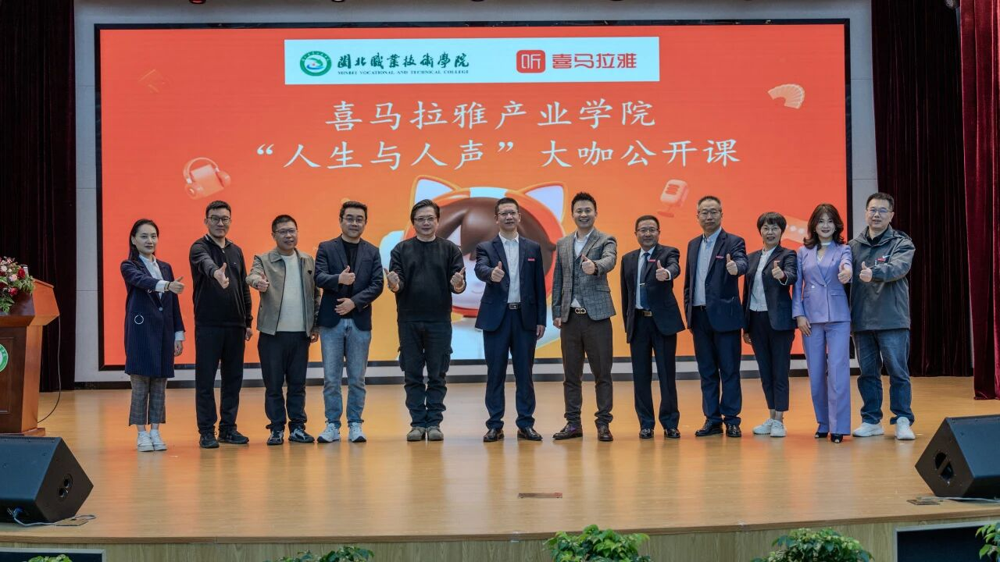
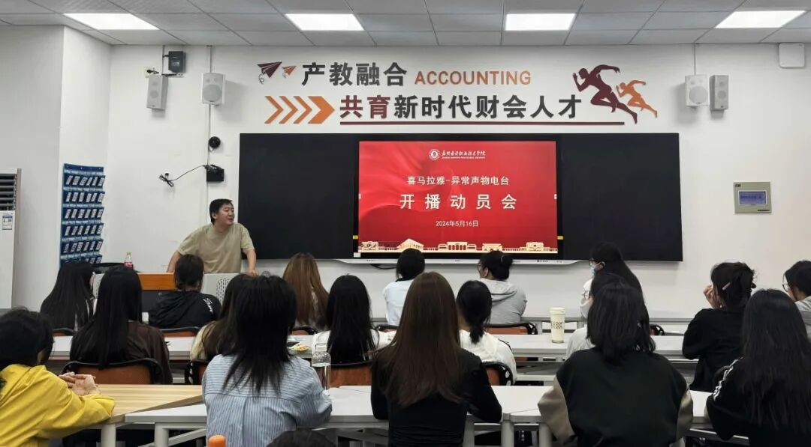
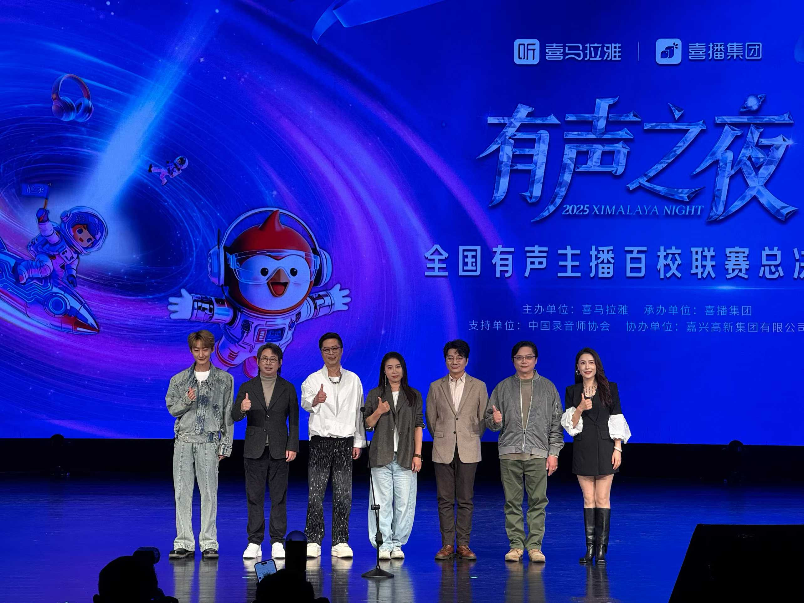
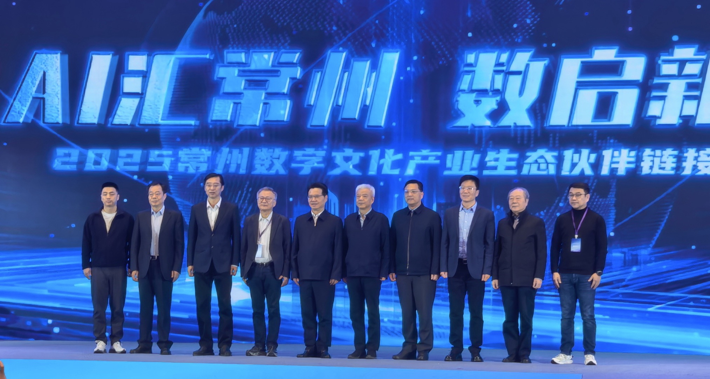
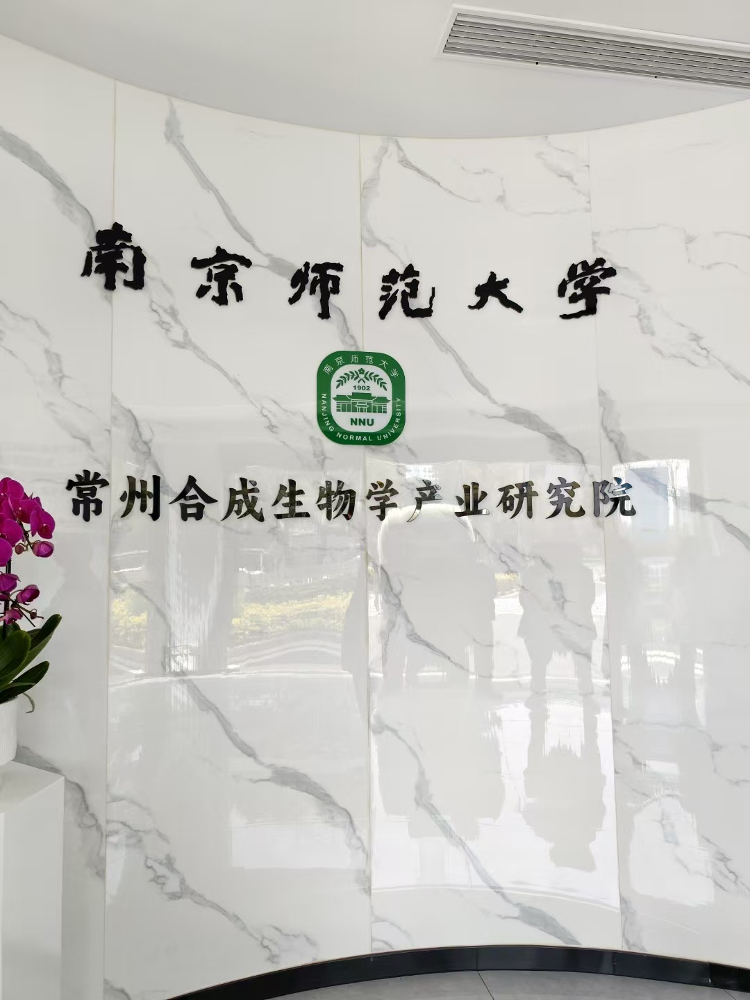
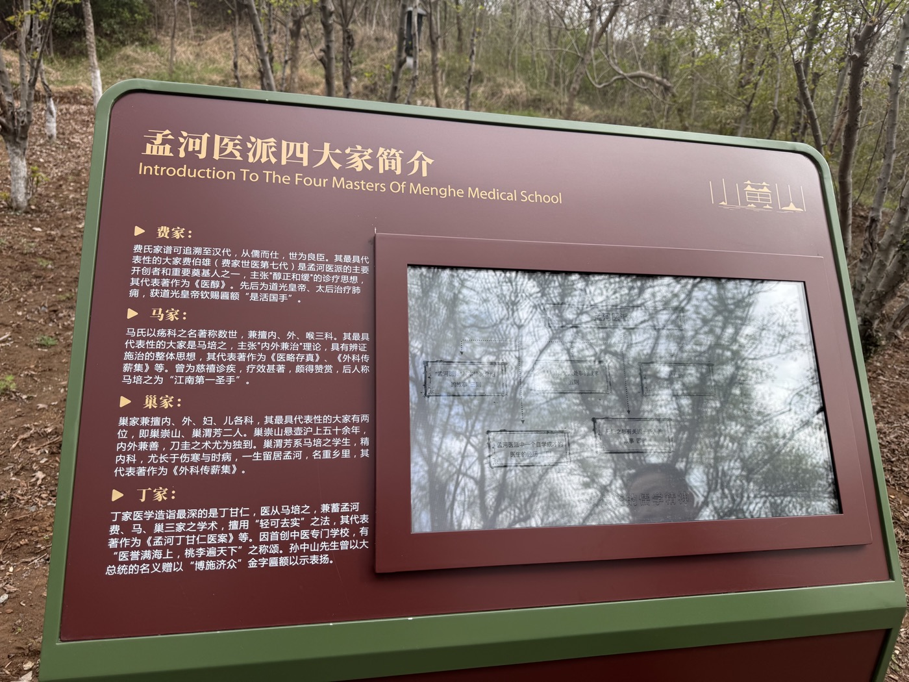
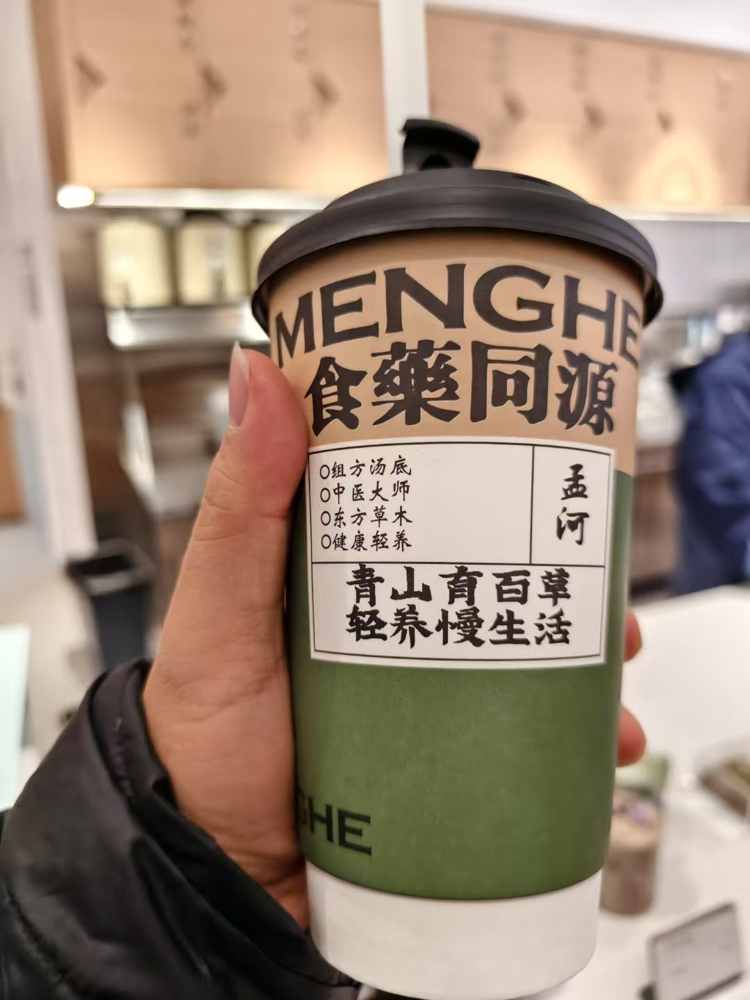

诚挚欢迎常州市委宣传部、高新区（新北区）及各位领导、文化产业界同仁莅临指导。 喜播是一家 AI 驱动的新职业教育科技公司，用声音与 AI 帮普通人掌握一技之长。 期待与常州在数字内容产业、AI 应用与产教融合领域，探索深度合作的可能。
一家 AI 驱动的新职业教育科技公司，用声音和 AI 帮普通人掌握一技之长、找到自己的舞台。
面向大众的 在线职业技能培训与人才服务——以有声演播、AI 内容创作为核心，提供"学习—成长—变现"的全链条。
以 付费课程与会员订阅 为核心收入，叠加主播孵化与硬件。2025 年净收入 9.2 亿、净利润 2.5 亿。
喜播起步于喜马拉雅大学事业部，在声音内容教育的土壤里成长。历经课程体系建设、品牌独立升级与 AI 化转型，如今已是独立运营的 AI 驱动新职业教育科技公司——既珍视来时的根基，也清楚要去的方向。
依托声音内容生态起步，深耕有声演播与新职业技能教育
首张声音课程专辑《给主播的声音入门课》上线，开启系统化声音教学
《新晋主播集训营》《有声书主播攀登计划》相继上线，课程体系成型
推出有声演播训练营，「攀登计划」全面启动，规模化培养有声主播
正式升级为「喜播教育」品牌，走向独立运营
攀登计划课程重磅升级，上线「AI 练功房」智能训练，开启 AI 赋能教学
净利润 2.5 亿，全面确立「AI 驱动的新职业教育科技公司」定位
喜播在守住口碑的同时实现了经营质量的全面跃升——营收与利润双双超额达成年度目标，并以扎实的服务质量赢得用户信任。
喜播深耕网络视听新媒体与数字内容赛道，为产业培养新职业人才、推动产教融合——与常州发展文化产业的方向高度契合。
面向有声演播、AI 短视频、AI 写作等新职业，培养能产出真实作品、对接真实就业的数字内容人才。学员作品年播放量达 49 亿。
与中国传媒大学、上海戏剧学院、浙江传媒学院、华东师范大学等开展产教融合，合作高校 30+ 所、覆盖 12 省，构建协同育人模式。
把 AI 真正作为先进生产力嵌入业务流程——9 个智能体协同、14 维合规校验、12 维质量评分，是可复制到文化科技场景的工程化能力。
为宝妈、退休及职场副业人群提供线上兼职与接单机会，让"声音"和"创作"成为可持续收入——线上兼职岗位 3000+ / 年。
喜播与职业院校共建产业学院、与传媒类高校协同育人，让人才培养直接对接真实产业需求——这套校企共建模式可复制、可落地。

开设 播音与主持、融媒体技术与运营 两大专业，培养主播、短视频博主、有声书演播者、节目主持人及融媒体技术人才。采用"以赛促教、育训结合"，把真实产业项目导入课堂。

喜播与嘉兴南洋职业技术学院共建产教融合项目，「异常声物电台」正式开播——把声音内容创作引入校园，学生在真实电台项目中参与策划、演播与运营实践，实现"学中做、做中学"。
与中国传媒大学、浙江传媒学院、上海戏剧学院、华东师范大学等 30+ 高校开展产教融合，构建"双侧驱动、多链融合"的协同育人模式，覆盖 12 省——把高校的学术资源与喜播的产业资源、就业出口打通。
「有声之夜」是面向全国的有声主播赛事，喜播作为核心承办与运营方，主导从选手培养、赛事组织到百校联动的全过程。它既是喜播数字内容人才的出口，也彰显了承办全国级文化赛事、联动百所高校的组织能力——这正是文化产业项目落地所需的稀缺能力。

有声之夜品牌赛事启幕，为有声爱好者搭建展示舞台
赛制与规模持续升级，参赛主播规模稳步扩大
分社会赛区与高校赛区，超 5000 名选手参赛、全国 120+ 所高校学生参与，单届累计曝光超 4 亿；设冠亚季军、最佳角色音、最佳旁白等多类奖项
全国 196 所学校组队参赛，中国传媒大学、浙江传媒学院、深圳大学等 10 强高校会师总决赛；季冠霖、冯骏骅、叶清等配音名家担任评委
由中国录音师协会支持、嘉兴高新集团协办，联合阅文集团、掌阅、七猫等头部内容平台共同参与，赛事规格与行业生态持续升级
赛事联动中国传媒大学、浙江传媒学院、深圳大学、南京传媒学院、天津传媒学院等全国百余所高校，把人才培养与赛事实战深度结合。
季冠霖、冯骏骅、叶清等著名配音演员担任评委；颁奖盛典于嘉兴市文化艺术中心秀湖音乐厅举行，兼具专业高度与文化影响力。
喜播不止是"用 AI 上几个工具"，而是把 AI 嵌入经营决策、销售服务、内容生产、合规治理的全流程——让一家内容科技公司像"AI 原生组织"一样运转。这正是"新质生产力"在数字内容产业的一次具体落地，也是我们愿意向常州开放、共建的核心能力。
以经营决策为中心，反向定义需要什么数据。不盲目囤数据，而是从"今天该不该加投、这个学员该不该升班、哪条业务线要预警"等真实决策出发，让每一份数据都服务于一次具体判断。
9 个专业智能体像一支"AI 经营班子"7×24 协同运转。销售助教、AI 班主任、合规检察官、质量评分官各司其职，把过去靠人盯、靠经验的工作，变成有标准、可追溯的系统。
把藏在员工个人经验里的能力，沉淀为可复用的数字资产。优秀的话术、判断标准、服务流程被结构化进系统，组织能力不再随人员流动而清零——这是喜播真正的护城河。
"管得住"是"用得好"的前提。14 维合规校验 + AI 身份合规披露 + 数据分级与脱敏机制，把内容安全与数据安全做在 AI 应用的最前端，而非事后补救。
从经营决策出发，到智能体执行、合规校验，再到数据反哺与持续迭代——形成"越用越聪明"的正向飞轮。
在喜播，AI 承担重复、规则性、可标准化的工作，人聚焦于创造、判断与情感连接。班主任有了"AI 副驾"后能陪伴更多学员、服务更有温度；老师的优秀经验通过 AI 放大到全公司。我们追求的不是"少用人"，而是"让每个人创造更大的价值"——这是技术向善的底线，也是一家教育公司应有的温度。
喜播在内容产业打磨出的数据闭环、智能体协同、合规治理能力，正在向大健康延伸——孵化「健康知己」个性化健康管理系统。它瞄准的，是健康中国 2030 最核心的命题：从"治已病"到"治未病"。下面是两个真实个体的对照。
李小白，41 岁。普通体检：空腹血糖 4.99「正常」，报告放行。但深一层看——胰岛素抵抗 HOMA-IR 9.31、BMI 37.3、甘油三酯 3.30，已是糖尿病的前夜。现行体检体系，正在漏掉大量这样的"未病"人群。
蒋德铭，46 岁。早发现 + 数据追踪 + 生活方式干预：脂肪肝逆转、空腹血糖 6.06→5.63、坏胆固醇 4.35→3.54、减重 10.7kg。同一条代谢病线，早 5 年介入，结果天差地别——靠的不是吃药，是"看得见 + 行为闭环"。
从设备数据采集，到 AI 分析、定制方案、行为验证，再到指标改善与数据复利——形成"越用越懂你"的健康正向飞轮。
个性化指标(胰岛素抵抗等)能比传统体检早 5–10 年发现慢病苗头，真正把"预防为主"落到实处。
糖尿病前期生活方式干预的成本，是后期透析/心梗救治的极小零头。每前移一步，省下巨额医疗支出。
同一套系统可下沉基层、单位、家庭。期待与常州在大健康产业共建——从"人均寿命"迈向"人均健康寿命"。
第一曲线已能健康造血，喜播正用 AI 重塑业务与组织，打开更长期的增长空间。
把训练营升级为会员订阅服务，私域已沉淀 123 万活跃用户；并基于声音生态与用户关系，探索面向 35–55 岁女性的 AI 健康陪伴等更长周期的新曲线。
用智能体团队承担销售、服务、合规、评分等工作，让经营从"靠感觉"变成"有系统"，组织能力不再随人员流动而清零——这是喜播真正的护城河。
此前，喜播团队已赴常州，出席 「AI 汇常州 · 数启新程」2025 常州数字文化产业生态伙伴链接大会，并实地考察常州的数字文化与大健康产业——双方的合作探索，早已在路上。




以下为初步的合作设想，期待在今日座谈中与各位领导深入交流、共同探讨落地路径。
围绕「有声之夜」全国有声主播大赛这一成熟文化 IP，探讨与常州共建赛事落地、引入分赛区或总决赛的可能——以全国级文化赛事联动百校、汇聚行业大咖，带动常州数字内容产业与城市文化影响力。
围绕喜播第二曲线的 AI 健康陪伴 新业务，探讨与常州在场景落地、产业协同与本地化运营上的合作——把声音生态、AI 长期陪伴能力与常州的产业与人群资源结合，共同探索面向中老年人群的健康陪伴新模式。
喜播是一家有底盘、有口碑、又坚定拥抱 AI 与新曲线的科技公司。 我们由衷期待与常州市、高新区（新北区）及各位文化产业界同仁， 在数字内容产业、AI 应用与产教融合的更大语境下，探索长期、务实的合作。